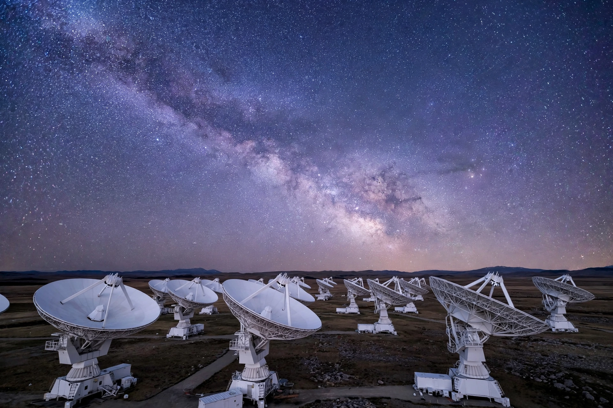

Search for extraterrestrial intelligence
| SETI | |
|---|---|
 Radio telescopes listening for extraterrestrial signals | |
| Full name | Search for extraterrestrial intelligence |
| Key figures | Frank Drake, Jill Tarter, Carl Sagan |
| Key facilities | Green Bank Telescope, Allen Telescope Array, FAST, Parkes Observatory |
SETI, the search for extraterrestrial intelligence, is a collective term for scientific efforts to detect intelligent life beyond Earth, most commonly by monitoring electromagnetic radiation for signs of transmissions from other civilisations. Despite decades of searching, no confirmed evidence of extraterrestrial intelligence has been found — a silence known as the Fermi paradox.
Modern SETI began in 1959–1960: Giuseppe Cocconi and Philip Morrison argued in Nature that radio telescopes could detect interstellar broadcasts, and Frank Drake conducted Project Ozma at Green Bank, listening to two nearby stars. In 1961 Drake formulated the Drake equation to estimate the number of communicative civilisations in the Milky Way. The unexplained "Wow! signal" of 1977, a strong narrowband burst recorded by Ohio State's Big Ear telescope, remains the most famous candidate signal, never repeated or explained.
Most SETI searches target narrowband radio signals near the 1420 MHz hydrogen line, a natural "water hole" frequency, though optical SETI looks for brief laser pulses. NASA's SETI programme was cancelled by Congress in 1993; privately funded work continued through the SETI Institute (founded 1984) and projects such as SETI@home (1999–2020), which distributed telescope data to volunteers' computers. The $100 million Breakthrough Listen initiative, launched in 2015, is the largest SETI effort ever undertaken, surveying a million stars and a hundred galaxies. New instruments such as the Square Kilometre Array promise far greater sensitivity.
SETI sits alongside the active messaging of other civilisations (METI), the study of technosignatures, and astrobiology's search for simpler life. The field also grapples with the question of how humanity should respond if a signal is ever detected.